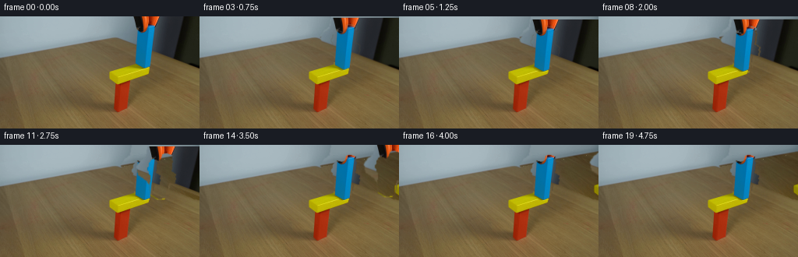
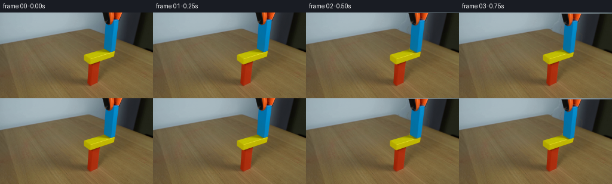

CODING AGENTS AS PIXEL WORLD MODELS
traex/GPT-5.6-Sol · 0181
点击播放 · 原生 RGB 像素
逐轮保存的候选
回放视频、检查图与代码变化。
每份候选均可单独播放。实际图片检查记录在下方工具轨迹中。
候选 01播放与检查图
点击播放 · 原生 RGB 像素


展开代码变化
--- 上一保存版本
+++ 本次保存版本
@@ -0,0 +1,178 @@
+from pathlib import Path
+import cv2
+import numpy as np
+from PIL import Image
+import artifact_io
+
+ROOT = Path(__file__).resolve().parent
+
+
+def smooth_mask(mask, sigma=0.65):
+ a = mask.astype(np.float32) / 255.0
+ if sigma:
+ a = cv2.GaussianBlur(a, (0, 0), sigma, borderType=cv2.BORDER_REPLICATE)
+ return np.clip(a, 0.0, 1.0)
+
+
+def warp_layer(rgb, alpha, dx, dy):
+ """Translate a premultiplied image by a potentially fractional pixel."""
+ h, w = alpha.shape
+ M = np.float32([[1, 0, dx], [0, 1, dy]])
+ pre = rgb.astype(np.float32) * alpha[..., None]
+ wp = cv2.warpAffine(pre, M, (w, h), flags=cv2.INTER_LINEAR,
+ borderMode=cv2.BORDER_CONSTANT, borderValue=0)
+ wa = cv2.warpAffine(alpha, M, (w, h), flags=cv2.INTER_LINEAR,
+ borderMode=cv2.BORDER_CONSTANT, borderValue=0)
+ return wp, np.clip(wa, 0, 1)
+
+
+def over(canvas, premultiplied, alpha):
+ return premultiplied + canvas * (1.0 - alpha[..., None])
+
+
+def make_clean_plate(src, total_alpha):
+ """Recover the fixed wall/table/blocks hidden by the initial grabber setup.
+
+ The rear edge of the table runs diagonally. Sampling 110 px to the left and
+ 19 px lower follows that edge, preserving the source's real fine texture.
+ A quadratic illumination fit corrects the sample for its new horizontal
+ location. Near the yellow platform we instead sample vertically from its
+ unobstructed top.
+ """
+ h, w = src.shape[:2]
+ yy, xx = np.mgrid[0:h, 0:w].astype(np.float32)
+ sx = np.clip(xx - 110.0, 0, w - 1)
+ sy = np.clip(yy + 19.0, 0, h - 1)
+ mapped = cv2.remap(src.astype(np.float32), sx, sy, cv2.INTER_LINEAR,
+ borderMode=cv2.BORDER_REFLECT_101)
+
+ # Fit separate smooth illumination fields to unobstructed wall and table.
+ horizon = 53.5 - 0.173 * xx
+ feats = np.stack([np.ones_like(xx), xx, yy, xx*xx, xx*yy, yy*yy], -1)
+ sample_horizon = 53.5 - 0.173 * sx
+ out = mapped.copy()
+ for region in (0, 1):
+ if region == 0: # wall
+ train = (xx < 148) & (yy < horizon - 4)
+ target = yy < horizon + 1
+ source_region = sy < sample_horizon + 1
+ else: # wooden table
+ train = (xx < 132) & (yy > horizon + 7) & (yy < 136)
+ target = yy >= horizon + 1
+ source_region = sy >= sample_horizon + 1
+ A = feats[train]
+ # Coordinates of sampled pixels, for evaluating fitted light trend.
+ sf = np.stack([np.ones_like(sx), sx, sy, sx*sx, sx*sy, sy*sy], -1)
+ for c in range(3):
+ coef, *_ = np.linalg.lstsq(A, src[..., c][train].astype(np.float32), rcond=None)
+ pred_t = np.tensordot(feats, coef, axes=([-1], [0]))
+ pred_s = np.tensordot(sf, coef, axes=([-1], [0]))
+ delta = np.clip(pred_t - pred_s, -34, 34)
+ use = target & source_region
+ out[..., c][use] += delta[use]
+
+ # Immediately behind the block is the actual yellow top, available lower
+ # in the same columns. This avoids inventing a brown patch at contact.
+ vy = np.clip(yy + 12, 0, h - 1).astype(np.float32)
+ vertical = cv2.remap(src.astype(np.float32), xx, vy, cv2.INTER_LINEAR,
+ borderMode=cv2.BORDER_REFLECT_101)
+ platform = (xx >= 145) & (xx <= 201) & (yy >= 59)
+ out[platform] = vertical[platform]
+
+ out = np.clip(out, 0, 255)
+ # Blend only under the foreground and preserve all photographed pixels else.
+ a = np.clip(total_alpha * 1.12, 0, 1)[..., None]
+ clean = src.astype(np.float32) * (1-a) + out * a
+ return clean
+
+
+def build_layers(src):
+ h, w = src.shape[:2]
+ # The silhouette is read from the fixed source frame. It includes the
+ # blue block and the articulated orange/black grabber entering at right.
+ total = np.zeros((h, w), np.uint8)
+ silhouette = np.array([
+ [169, 0], [256, 0], [256, 70], [249, 69], [235, 63],
+ [217, 56], [198, 48], [196, 55], [195, 62], [191, 67],
+ [181, 67], [173, 62], [172, 49], [167, 43], [157, 36],
+ [155, 25], [160, 18], [167, 13]
+ ], np.int32)
+ cv2.fillPoly(total, [silhouette], 255)
+
+ # Data-derived blue block matte. Strong blue pixels define its material;
+ # closing and a small expansion include darker grain and antialiased edges.
+ hsv = cv2.cvtColor(src, cv2.COLOR_RGB2HSV)
+ blue_seed = cv2.inRange(hsv, np.array([85, 52, 25], np.uint8),
+ np.array([135, 255, 255], np.uint8))
+ n, labels, stats, _ = cv2.connectedComponentsWithStats(blue_seed)
+ block = np.zeros_like(blue_seed)
+ if n > 1:
+ idx = 1 + np.argmax(stats[1:, cv2.CC_STAT_AREA])
+ block[labels == idx] = 255
+ block = cv2.morphologyEx(block, cv2.MORPH_CLOSE,
+ cv2.getStructuringElement(cv2.MORPH_ELLIPSE, (7, 7)))
+ block = cv2.dilate(block, cv2.getStructuringElement(cv2.MORPH_ELLIPSE, (5, 5)))
+ # Keep the matte confined to the photographed wooden block silhouette.
+ block &= total
+ block[:, 207:] = 0
+ block[69:] = 0
+
+ total_a = smooth_mask(total, 0.7)
+ block_a = smooth_mask(block, 0.55) * total_a
+ # Tool owns every foreground pixel not belonging to the blue material.
+ # A sharper subtraction retains its fingers at the contact boundary.
+ tool_a = np.clip(total_a - block_a * 0.985, 0, 1)
+ return total_a, block_a, tool_a
+
+
+def contact_shadow(h, w, amount):
+ """Soft, short shadow appearing as the blue block reaches the yellow top."""
+ yy, xx = np.mgrid[0:h, 0:w]
+ # Perspective-aligned ellipse just below the block.
+ g = np.exp(-(((xx-184.5)/12.0)**2 + ((yy-68.3)/1.55)**2) * 1.7)
+ return np.clip(g * amount, 0, 0.22).astype(np.float32)
+
+
+def render():
+ src = np.asarray(Image.open(ROOT / 'first_frame.png').convert('RGB'), dtype=np.uint8)
+ assert src.shape == (144, 256, 3)
+ total_a, block_a, tool_a = build_layers(src)
+ clean = make_clean_plate(src, total_a)
+ frames = []
+
+ # Frame-by-frame real-time motion at 4 fps. First two frames deliberately
+ # hold to establish the demonstration before the controlled descent.
+ settle_y = [0, 0, 0.8, 1.8, 2.9, 4.0, 4.0, 4.0,
+ 4.0, 4.0, 4.0, 4.0, 4.0, 4.0, 4.0, 4.0, 4.0, 4.0, 4.0, 4.0]
+ tool_dx = [0, 0, 0, 0, 0, 0, 0, 0,
+ 2, 6, 12, 20, 30, 42, 56, 72, 90, 108, 126, 142]
+ tool_dy = [0, 0, .8, 1.8, 2.9, 4.0, 4.0, 4.0,
+ 3.8, 3.4, 2.8, 2.0, 1.0, 0.0, -1.2, -2.5, -4, -6, -8, -10]
+
+ for i in range(20):
+ if i <= 1:
+ # Guarantees the mandatory identity and a natural initial hold.
+ frame = src.copy()
+ else:
+ canvas = clean.copy()
+ # Contact shadow darkens gradually during descent, then remains.
+ sh = contact_shadow(144, 256, min(1.0, settle_y[i]/4.0) * 0.17)
+ canvas *= (1.0 - sh[..., None])
+
+ bp, ba = warp_layer(src, block_a, 0.0, settle_y[i])
+ canvas = over(canvas, bp, ba)
+
+ # During descent the tool follows the block. It then withdraws to
+ # the right with a slight upward easing, leaving the block behind.
+ tp, ta = warp_layer(src, tool_a, tool_dx[i], tool_dy[i])
+ canvas = over(canvas, tp, ta)
+ frame = np.clip(np.rint(canvas), 0, 255).astype(np.uint8)
+ frames.append(frame)
+
+ arr = np.stack(frames).astype(np.uint8)
+ assert np.array_equal(arr[0], src)
+ return arr
+
+
+if __name__ == '__main__':
+ artifact_io.save(render(), ROOT)
可观测工具轨迹
实际执行的命令与返回图片。
命令 1exit 0
/bin/bash -lc "cat prompt.txt && printf '\\n--- GENERATION_RULES.md ---\\n' && cat GENERATION_RULES.md"
命令 2exit 0
/bin/bash -lc "find . -maxdepth 2 -type f -printf '%p\\n' | sort && printf '\\n--- tools ---\\n' && command -v ffmpeg || true && command -v python3 || true"
命令 3exit 0
/bin/bash -lc "python3 - <<'PY'
from PIL import Image
im=Image.open('first_frame.png')
print(im.mode, im.size)
print(im.getextrema())
PY"命令 4exit 0
/bin/bash -lc "python3 - <<'PY'
try:
import cv2; print('cv2',cv2.__version__)
except Exception as e: print(e)
try:
import scipy; print('scipy',scipy.__version__)
except Exception as e: print(e)
PY"命令 5exit 0
/bin/bash -lc "python3 - <<'PY'
from PIL import Image
import numpy as np
im=np.array(Image.open('first_frame.png'))
# coarse 8x8 tiles: mean rgb, print dominant category hand-coded
for y in range(0,144,8):
row=''
for x in range(0,256,8):
a=im[y:y+8,x:x+8].reshape(-1,3); r,g,b=a.mean(0)
if max(r,g,b)<45: c='K'
elif r>1.35*g and r>1.5*b: c='R'
elif r>1.2*b and g>1.15*b and r>80 and g>55: c='Y'
elif b>1.18*r and b>1.12*g and b>55: c='B'
elif max(r,g,b)-min(r,g,b)<18: c='.' if r>120 else ':'
else:c='?'
row+=c
print(f'{y:3}',row)
PY"命令 6exit 0
/bin/bash -lc 'cat artifact_io.py'
命令 7exit 0
/bin/bash -lc "python3 - <<'PY'
import cv2, numpy as np
im=cv2.imread('first_frame.png'); hsv=cv2.cvtColor(im,cv2.COLOR_BGR2HSV)
for name,(lo,hi) in {
'blue':((85,50,25),(135,255,255)),
'red':((0,70,30),(12,255,255)),
'red2':((170,70,30),(179,255,255)),
'yellow':((12,35,40),(45,255,255)),
'black':((0,0,0),(179,255,55)),
'orange':((5,90,40),(28,255,255))}.items():
m=cv2.inRange(hsv,np.uint8(lo),np.uint8(hi))
n,L,S,C=cv2.connectedComponentsWithStats(m)
comps=sorted([tuple(map(int,s)) for s in S[1:] if s[4]>=5],key=lambda z:-z[4])[:12]
print(name, comps)
PY"命令 8exit 0
/bin/bash -lc "python3 - <<'PY'
from PIL import Image
import numpy as np
im=np.array(Image.open('first_frame.png'))
# nearest palette classify every 4 px, based HSV-ish RGB signatures
for y in range(0,144,4):
row=''
for x in range(0,256,4):
p=im[y:y+4,x:x+4].reshape(-1,3).mean(0); r,g,b=p
if max(p)<42:c='#'
elif b>r*1.30 and b>g*1.12:c='B'
elif r>g*1.4 and r>b*1.45:c='R'
elif r>115 and g>70 and b<g*.76:c='Y'
elif r>80 and r>g*1.22 and g>b*1.15:c='O'
elif max(p)-min(p)<20:c='.' if r>120 else ':'
else:c=' '
row+=c
print(f'{y:03} {row}')
PY"命令 9exit 0
/bin/bash -lc "python3 - <<'PY'
import cv2, numpy as np
im=cv2.imread('first_frame.png'); gray=cv2.cvtColor(im,cv2.COLOR_BGR2GRAY)
for th in [(30,80),(50,120),(80,180)]:
e=cv2.Canny(gray,*th)
ls=cv2.HoughLinesP(e,1,np.pi/180,threshold=20,minLineLength=12,maxLineGap=4)
print('\\n',th)
if ls is not None:
z=[]
for x1,y1,x2,y2 in ls[:,0]:
L=((x2-x1)**2+(y2-y1)**2)**.5
ang=np.degrees(np.arctan2(y2-y1,x2-x1))
z.append((round(L,1),round(ang,1),(x1,y1,x2,y2)))
for a in sorted(z,reverse=True)[:40]: print(a)
PY"命令 10exit 0
/bin/bash -lc "python3 - <<'PY'
from PIL import Image
import numpy as np
im=np.array(Image.open('first_frame.png'))
# print rgb + hsv selected coordinates
import cv2
hsv=cv2.cvtColor(im,cv2.COLOR_RGB2HSV)
for y in range(0,144,8):
print('y',y, end=': ')
for x in range(0,256,16):
p=im[y,x]; h=hsv[y,x]
print(f'{x}={p[0]:02x}{p[1]:02x}{p[2]:02x}/h{h[0]:03}',end=' ')
print()
PY"命令 11exit 0
/bin/bash -lc "python3 - <<'PY'
import cv2,numpy as np
im=cv2.imread('first_frame.png'); hsv=cv2.cvtColor(im,cv2.COLOR_BGR2HSV)
# print ranges meeting blue per y
m=cv2.inRange(hsv,(85,50,25),(135,255,255))
for y in range(144):
xs=np.where(m[y]>0)[0]
if len(xs):
# intervals
cut=np.where(np.diff(xs)>1)[0]; starts=np.r_[0,cut+1]; ends=np.r_[cut,len(xs)-1]
ints=[(xs[a],xs[b]) for a,b in zip(starts,ends) if xs[b]-xs[a]>=1]
if ints: print(y,ints)
PY"命令 12exit 0
/bin/bash -lc "python3 - <<'PY'
from PIL import Image
import numpy as np
im=np.array(Image.open('first_frame.png'))
# ANSI truecolor halfblocks enlarged region x136:256 y0:96 one char per 2x2 average (run in terminal)
for y in range(0,96,2):
s=''
for x in range(136,256,2):
p=im[y:y+2,x:x+2].mean((0,1)).astype(int)
s+=f'\\x1b[48;2;{p[0]};{p[1]};{p[2]}m '
s+='\\x1b[0m'
print(s)
PY"命令 13exit 0
/bin/bash -lc "cat > generate.py <<'PY'
from pathlib import Path
import cv2
import numpy as np
from PIL import Image
import artifact_io
ROOT = Path(__file__).resolve().parent
def smooth_mask(mask, sigma=0.65):
a = mask.astype(np.float32) / 255.0
if sigma:
a = cv2.GaussianBlur(a, (0, 0), sigma, borderType=cv2.BORDER_REPLICATE)
return np.clip(a, 0.0, 1.0)
def warp_layer(rgb, alpha, dx, dy):
\"\"\"Translate a premultiplied image by a potentially fractional pixel.\"\"\"
h, w = alpha.shape
M = np.float32([[1, 0, dx], [0, 1, dy]])
pre = rgb.astype(np.float32) * alpha[..., None]
wp = cv2.warpAffine(pre, M, (w, h), flags=cv2.INTER_LINEAR,
borderMode=cv2.BORDER_CONSTANT, borderValue=0)
wa = cv2.warpAffine(alpha, M, (w, h), flags=cv2.INTER_LINEAR,
borderMode=cv2.BORDER_CONSTANT, borderValue=0)
return wp, np.clip(wa, 0, 1)
def over(canvas, premultiplied, alpha):
return premultiplied + canvas * (1.0 - alpha[..., None])
def make_clean_plate(src, total_alpha):
\"\"\"Recover the fixed wall/table/blocks hidden by the initial grabber setup.
The rear edge of the table runs diagonally. Sampling 110 px to the left and
19 px lower follows that edge, preserving the source's real fine texture.
A quadratic illumination fit corrects the sample for its new horizontal
location. Near the yellow platform we instead sample vertically from its
unobstructed top.
\"\"\"
h, w = src.shape[:2]
yy, xx = np.mgrid[0:h, 0:w].astype(np.float32)
sx = np.clip(xx - 110.0, 0, w - 1)
sy = np.clip(yy + 19.0, 0, h - 1)
mapped = cv2.remap(src.astype(np.float32), sx, sy, cv2.INTER_LINEAR,
borderMode=cv2.BORDER_REFLECT_101)
# Fit separate smooth illumination fields to unobstructed wall and table.
horizon = 53.5 - 0.173 * xx
feats = np.stack([np.ones_like(xx), xx, yy, xx*xx, xx*yy, yy*yy], -1)
sample_horizon = 53.5 - 0.173 * sx
out = mapped.copy()
for region in (0, 1):
if region == 0: # wall
train = (xx < 148) & (yy < horizon - 4)
target = yy < horizon + 1
source_region = sy < sample_horizon + 1
else: # wooden table
train = (xx < 132) & (yy > horizon + 7) & (yy < 136)
target = yy >= horizon + 1
source_region = sy >= sample_horizon + 1
A = feats[train]
# Coordinates of sampled pixels, for evaluating fitted light trend.
sf = np.stack([np.ones_like(sx), sx, sy, sx*sx, sx*sy, sy*sy], -1)
for c in range(3):
coef, *_ = np.linalg.lstsq(A, src[..., c][train].astype(np.float32), rcond=None)
pred_t = np.tensordot(feats, coef, axes=([-1], [0]))
pred_s = np.tensordot(sf, coef, axes=([-1], [0]))
delta = np.clip(pred_t - pred_s, -34, 34)
use = target & source_region
out[..., c][use] += delta[use]
# Immediately behind the block is the actual yellow top, available lower
# in the same columns. This avoids inventing a brown patch at contact.
vy = np.clip(yy + 12, 0, h - 1).astype(np.float32)
vertical = cv2.remap(src.astype(np.float32), xx, vy, cv2.INTER_LINEAR,
borderMode=cv2.BORDER_REFLECT_101)
platform = (xx >= 145) & (xx <= 201) & (yy >= 59)
out[platform] = vertical[platform]
out = np.clip(out, 0, 255)
# Blend only under the foreground and preserve all photographed pixels else.
a = np.clip(total_alpha * 1.12, 0, 1)[..., None]
clean = src.astype(np.float32) * (1-a) + out * a
return clean
def build_layers(src):
h, w = src.shape[:2]
# The silhouette is read from the fixed source frame. It includes the
# blue block and the articulated orange/black grabber entering at right.
total = np.zeros((h, w), np.uint8)
silhouette = np.array([
[169, 0], [256, 0], [256, 70], [249, 69], [235, 63],
[217, 56], [198, 48], [196, 55], [195, 62], [191, 67],
[181, 67], [173, 62], [172, 49], [167, 43], [157, 36],
[155, 25], [160, 18], [167, 13]
], np.int32)
cv2.fillPoly(total, [silhouette], 255)
# Data-derived blue block matte. Strong blue pixels define its material;
# closing and a small expansion include darker grain and antialiased edges.
hsv = cv2.cvtColor(src, cv2.COLOR_RGB2HSV)
blue_seed = cv2.inRange(hsv, np.array([85, 52, 25], np.uint8),
np.array([135, 255, 255], np.uint8))
n, labels, stats, _ = cv2.connectedComponentsWithStats(blue_seed)
block = np.zeros_like(blue_seed)
if n > 1:
idx = 1 + np.argmax(stats[1:, cv2.CC_STAT_AREA])
block[labels == idx] = 255
block = cv2.morphologyEx(block, cv2.MORPH_CLOSE,
cv2.getStructuringElement(cv2.MORPH_ELLIPSE, (7, 7)))
block = cv2.dilate(block, cv2.getStructuringElement(cv2.MORPH_ELLIPSE, (5, 5)))
# Keep the matte confined to the photographed wooden block silhouette.
block &= total
block[:, 207:] = 0
block[69:] = 0
total_a = smooth_mask(total, 0.7)
block_a = smooth_mask(block, 0.55) * total_a
# Tool owns every foreground pixel not belonging to the blue material.
# A sharper subtraction retains its fingers at the contact boundary.
tool_a = np.clip(total_a - block_a * 0.985, 0, 1)
return total_a, block_a, tool_a
def contact_shadow(h, w, amount):
\"\"\"Soft, short shadow appearing as the blue block reaches the yellow top.\"\"\"
yy, xx = np.mgrid[0:h, 0:w]
# Perspective-aligned ellipse just below the block.
g = np.exp(-(((xx-184.5)/12.0)**2 + ((yy-68.3)/1.55)**2) * 1.7)
return np.clip(g * amount, 0, 0.22).astype(np.float32)
def render():
src = np.asarray(Image.open(ROOT / 'first_frame.png').convert('RGB'), dtype=np.uint8)
assert src.shape == (144, 256, 3)
total_a, block_a, tool_a = build_layers(src)
clean = make_clean_plate(src, total_a)
frames = []
# Frame-by-frame real-time motion at 4 fps. First two frames deliberately
# hold to establish the demonstration before the controlled descent.
settle_y = [0, 0, 0.8, 1.8, 2.9, 4.0, 4.0, 4.0,
4.0, 4.0, 4.0, 4.0, 4.0, 4.0, 4.0, 4.0, 4.0, 4.0, 4.0, 4.0]
tool_dx = [0, 0, 0, 0, 0, 0, 0, 0,
2, 6, 12, 20, 30, 42, 56, 72, 90, 108, 126, 142]
tool_dy = [0, 0, .8, 1.8, 2.9, 4.0, 4.0, 4.0,
3.8, 3.4, 2.8, 2.0, 1.0, 0.0, -1.2, -2.5, -4, -6, -8, -10]
for i in range(20):
if i <= 1:
# Guarantees the mandatory identity and a natural initial hold.
frame = src.copy()
else:
canvas = clean.copy()
# Contact shadow darkens gradually during descent, then remains.
sh = contact_shadow(144, 256, min(1.0, settle_y[i]/4.0) * 0.17)
canvas *= (1.0 - sh[..., None])
bp, ba = warp_layer(src, block_a, 0.0, settle_y[i])
canvas = over(canvas, bp, ba)
# During descent the tool follows the block. It then withdraws to
# the right with a slight upward easing, leaving the block behind.
tp, ta = warp_layer(src, tool_a, tool_dx[i], tool_dy[i])
canvas = over(canvas, tp, ta)
frame = np.clip(np.rint(canvas), 0, 255).astype(np.uint8)
frames.append(frame)
arr = np.stack(frames).astype(np.uint8)
assert np.array_equal(arr[0], src)
return arr
if __name__ == '__main__':
artifact_io.save(render(), ROOT)
PY
python3 generate.py
python3 - <<'PY'
import numpy as np
from PIL import Image
z=np.load('pixels.npz')['pixels']
frames=np.stack([np.array(Image.open(f'frames/{i:02}.png')) for i in range(20)])
src=np.array(Image.open('first_frame.png'))
print('frames',frames.shape,frames.dtype,'first identical',np.array_equal(frames[0],src))
print('changed pixels:',[int(np.any(frames[i]"'!=src,axis=2).sum()) for i in range(20)])
print('"'mean abs step:',[round(float(np.abs(frames[i].astype(int)-frames[i-1].astype(int)).mean()),3) for i in range(1,20)])
print('outputs',z.shape,z.dtype)
PY"命令 14exit 0
/bin/bash -lc "python3 - <<'PY'
import cv2,numpy as np
im=cv2.cvtColor(cv2.imread('first_frame.png'),cv2.COLOR_BGR2RGB)
r,g,b=[im[...,i].astype(int) for i in range(3)]
for dr,dg in [(40,18),(55,22),(65,25),(75,30)]:
m=((b-r>dr)&(b-g>dg)&(b>80)).astype('uint8')*255
n,L,S,C=cv2.connectedComponentsWithStats(m)
comps=sorted([tuple(map(int,s)) for s in S[1:] if s[4]>=3],key=lambda x:-x[4])[:10]
print(dr,dg,comps)
PY"命令 15exit 0
/bin/bash -lc "python3 - <<'PY'
import numpy as np
from PIL import Image
for i in [0,2,5,8,11,14,17,19]:
a=np.array(Image.open(f'frames/{i:02}.png'))
# stats regions, holes from near black, blue extents
r,g,b=[a[...,j].astype(int) for j in range(3)]
blue=(b-r>55)&(b-g>22)&(b>80)
ys,xs=np.where(blue)
print(i,'blue n/bbox',blue.sum(),(xs.min(),ys.min(),xs.max(),ys.max()),'black right',((a[:,:,0]<20)&(a[:,:,1]<20)&(np.indices(a.shape[:2])[1]>150)).sum())
PY"命令 16exit 0
/bin/bash -lc "set -e
python3 -m py_compile generate.py
sha256sum pixels.npz frames/00.png frames/19.png > .tmp/hashes.before
python3 generate.py
sha256sum pixels.npz frames/00.png frames/19.png > .tmp/hashes.after
diff -u .tmp/hashes.before .tmp/hashes.after
python3 - <<'PY'
from pathlib import Path
import numpy as np
from PIL import Image
src=np.asarray(Image.open('first_frame.png').convert('RGB'))
frames=np.stack([np.asarray(Image.open(f'frames/{i:02}.png').convert('RGB')) for i in range(20)])
p=np.load('pixels.npz')['pixels']
unpacked=np.stack([((p>>16)&255),((p>>8)&255),(p&255)],-1).transpose(2,0,1,3).astype(np.uint8)
assert frames.shape==(20,144,256,3) and frames.dtype==np.uint8
assert np.array_equal(frames[0],src)
assert np.array_equal(frames,unpacked)
assert Path('index.html').is_file() and Path('inspection.png').is_file()
print('PASS: 20 RGB frames, 256x144, packed artifact round-trip exact')
print('PASS: frame 00 pixel-identical to first_frame.png')
print('PASS: deterministic regeneration')
PY
ls -lh generate.py pixels.npz index.html inspection.png frames/00.png frames/19.png"保存候选 1 份；完成命令 16 次；可验证图片返回 0 张。原始 API 响应与完整日志保留在本地。